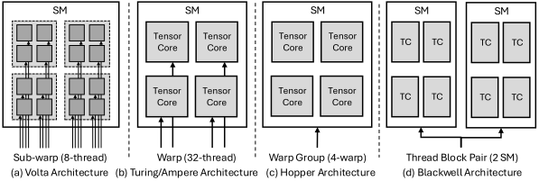
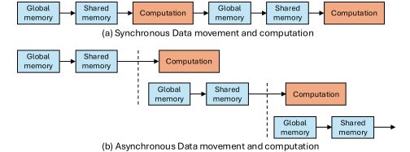

Evolution of Matrix-Engine Datapaths and Control Granularity
Matrix engines got faster far more quickly than the machinery that feeds them, and five generations of NVIDIA Tensor Cores are a good way to watch what that pressure did to a design. Two things changed in parallel. The data path moved from ordinary per-thread ld instructions to warp-level wmma.load, then to the more flexible ldmatrix, and finally to asynchronous transfers that overlap movement with computation. The control granularity — how many threads cooperate to issue one matrix operation — widened from an 8-thread sub-warp group to a full 32-thread warp, then to a 4-warp warp group, and finally across multiple streaming multiprocessors.

Read the two trends together and the logic is clear: as each matrix operation got larger, it became wasteful for a small group of threads to own it, and it became impossible to keep the engine busy with synchronous, finely addressed copies.
1.15.1Volta: Warp-Cooperative Programming Interface and Sub-Warp Machine Execution#
The first-generation Tensor Cores are presented to the programmer as warp-cooperative, but the machine executes them at a finer granularity: each 32-thread warp issues as four 8-thread quadpair micro-operations [1]. Volta also introduced wmma.load, which feeds the engine by loading N×128 bytes from shared memory into registers — a large, rigid transfer unit.
1.15.2Turing: Warp-Level MMA, ldmatrix, and Operand Layout#
Turing moved instruction issue from the 8-thread quadpair up to the full warp, spreading operand fragments across all 32 lanes [2]. It also added ldmatrix, where a group of four threads loads 16 consecutive bytes. That sits between the two earlier extremes: more efficient than per-thread 4-byte ld, more flexible than wmma.load's fixed 128-byte granularity.
The flexibility is the point. Because ldmatrix does not dictate a single layout, kernels can permute shared memory — CUTLASS-style swizzles, for instance — to avoid bank conflicts. Replacing a baseline matrix multiply-accumulate kernel with a permuted shared-memory layout enabled by ldmatrix has been measured at up to 3× faster than the wmma.load version [3].
1.15.3Ampere: cp.async and Global-to-Shared Data Movement#
Once Tensor Core throughput rose far enough, shared-memory tiling alone stopped being sufficient: moving the next tile from global to shared memory serialized against computing on the current one. Ampere's cp.async turns operand movement into a software pipeline. While the Tensor Cores work on tiles already resident in shared memory, later tiles are prefetched asynchronously from global memory.

The effect is less synchronization overhead and genuine overlap between compute and data movement: an asynchronous matrix multiply-accumulate kernel runs about 2× faster than the synchronous baseline [3].
1.15.4Hopper: WGMMA, TMA, and Distributed Shared Memory#
Hopper widens the control scope and deepens the pipeline. WGMMA expands the unit of issue from a single warp to a warp group of typically four warps. This addresses a measured ceiling: microbenchmarking reports warp-level MMA on Hopper plateauing near 63% of peak without warp-group-level pipelining [4].
On the operand-delivery side, the Tensor Memory Accelerator (TMA) takes over bulk global-to-shared transfers along with the address generation and loop overhead they carry. Instead of many threads cooperatively issuing fine-grained copies with explicit per-thread addressing, a single designated warp lane enqueues one descriptor-driven asynchronous tensor transfer. In a GEMM microbenchmark with M=128, N=4096 and K=4096, swapping Ampere-style cp.async staging for TMA raised profiled global-memory throughput from roughly 910 GB/s to 1.45 TB/s — a 59% increase in that kernel [5].
Hopper also adds distributed shared memory within an SM cluster, so SMs can exchange data directly instead of going through global memory. Measured SM-to-SM latency is about 180 cycles against roughly 265 cycles via L2, a reduction of about 32% [4].
1.15.5Blackwell: Tensor Memory and Paired-SM Tensor Execution#
Blackwell centres the datapath on the Tensor Cores by giving each SM 256 KB of dedicated Tensor Memory (TMEM) to hold intermediate operands. In back-to-back FP8 GEMM experiments TMEM sustains roughly 8 TB/s, about 2.1× the roughly 3.8 TB/s ceiling of ld.global-dominated paths [6].
It also pushes the cooperation boundary past a single SM. Under SM-pair execution, two adjacent thread blocks are co-scheduled within an SM cluster to jointly execute one larger matrix multiply-accumulate operation. Sharing operands across SMs cuts redundant control overhead and raises utilization — the same trajectory Hopper started, with wider cooperation and more asynchronous, more specialized data paths used to keep a rapidly growing matrix engine fed.
References
- 1.NVIDIA. CuTe’s support for Matrix Multiply-Accumulate instructions. 2026.
- 2.Da Yan, Wei Wang and Xiaowen Chu. Demystifying tensor cores to optimize half-precision matrix multiply. 2020 IEEE International Parallel and Distributed Processing Symposium (IPDPS), 2020.
- 3.Wei Sun et al. Dissecting tensor cores via microbenchmarks: Latency, throughput and numeric behaviors. IEEE Transactions on Parallel and Distributed Systems, 2022.
- 4.Weile Luo et al. Benchmarking and dissecting the nvidia hopper gpu architecture. 2024 IEEE International Parallel and Distributed Processing Symposium (IPDPS), 2024.
- 5.Adnan Hoque, Less Wright and Chih-Chieh Yang. Deep Dive on the Hopper TMA Unit for FP8 GEMMs. 2024.
- 6.Aaron Jarmusch and Sunita Chandrasekaran. Microbenchmarking NVIDIA's Blackwell Architecture: An in-depth Architectural Analysis. arXiv preprint arXiv:2512.02189, 2025.